- កំណត់ផ្ទៃក្រឡាប្រលេឡូក្រាមបានត្រឹមត្រូវ
- កំណត់ផ្ទៃក្រឡាចតុកោណព្នាយបានត្រឹមត្រូវ
- កំណត់ផ្ទៃក្រឡាចតុកោណស្មើបានត្រឹមត្រូវ ។
1. ផ្ទៃក្រឡាប្រលេឡូក្រាម
យើងបានសិក្សារួចមកហើយពីការគណនាផ្ទៃក្រឡានៃចតុកោណកែងដែលស្មើផលគុណរវាងរង្វាស់បណ្តោយឬបាត និងរង្វាស់ទទឹងឬកម្ពស់ ។
ចតុកោណកែងដែលនៅខាងស្តាំដៃនេះមានបាតរង្វាស់ 4 ឯកតានិងកម្ពស់ 2 ឯកតា ។ ដូច្នេះផ្ទៃក្រឡានៃចតុកោណកែងនេះមានរង្វាស់ 8 ឯកតាផ្ទៃ ។
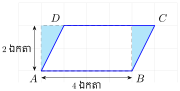
ដោយចតុកោណកែងជាប្រលេឡូក្រាមពិសេសនោះការគណនាផ្ទៃក្រឡានៃប្រលេឡូក្រាមទាក់ទងយ៉ាងជិតស្និតនិងការរកផ្ទៃក្រឡានៃចតុកោណកែង ។
ប្រលេឡូក្រាម ABCD បានពីចតុកោណកែងដោយគ្រាន់តែរំកិលផ្ទៃត្រីកោណ (ស្រមោល) ។
ផ្ទៃក្រឡានៃប្រលេឡូក្រាមនិងផ្ទៃនៃចតុកោណកែងខាងលើស្មើ 8 ឯកតាផ្ទៃដូចគ្នា ។ ដូច្នេះយើងអាចគណនាផ្ទៃក្រឡានៃប្រលេឡូក្រាមជាផលគុណនៃរង្វាស់ជ្រុងបាតនិងកម្ពស់ ។
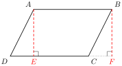
កម្ពស់ប្រលេឡូក្រាមជាអង្កត់ដែលគួសចេញពីកំពូលទៅកែងនឹងជ្រុងឈម ហើយជ្រុងឈមនេះហៅថា បាត ។
ឧទាហរណ៍ ៖ \(\displaystyle AE\) និង \(\displaystyle BF\) ជាកម្ពស់ប្រលេឡូក្រាម \(\displaystyle ABCD\) ដែលត្រូវនឹងបាត \(\displaystyle DC\)
\(\displaystyle DH\) និង \(\displaystyle AG\) ជាកម្ពស់ប្រលេឡូក្រាម \(\displaystyle ABCD\) ដែលត្រូវនិងបាត \(\displaystyle BC\) ។
ទ្រឹស្តីបទ
ផ្ទៃក្រឡាប្រលេឡូក្រាមដែលមានបាត \(\displaystyle b\) និងកម្ពស់ \(\displaystyle h\) កំណត់ដោយ
\[\mathcal{A} = bh \text{ ។}\]
ឧទាហរណ៍ 1 ៖ គេឱ្យប្រលេឡូក្រាម \(\displaystyle ABCD\) ដែលមានកម្ពស់ \(\displaystyle h = BE\) និងបាតមានរង្វាស់ \(\displaystyle b = DC\) ។ បង្ហាញថា ផ្ទៃក្រឡាប្រលេឡូក្រាម \(\displaystyle ABCD = bh\) ។
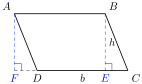
សម្រាយបញ្ជាក់
បន្លាយអង្កត់ \(\displaystyle DE\) រួចសង់ \(\displaystyle AF \perp DE\) ។ ពិនិត្យ \(\displaystyle \Delta AFD\) និង \(\displaystyle \Delta BEC\) ។
បើ \(\displaystyle ABCD\) ជាប្រលេឡូក្រាម នោះ \(\displaystyle AD = BC\) ហើយ \(\displaystyle \angle ADF = \angle BCE\) (មុំត្រូវគ្នា)
\(\displaystyle \angle AFD = \angle BEC = 90^\circ\) នោះ \(\displaystyle \Delta AFD \cong \Delta BEC\) នាំឱ្យ \(\displaystyle \mathcal{A}_{\Delta AFD} = \mathcal{A}_{\Delta BEC}\)
\(\displaystyle b = DC = AB\)
ផ្ទៃក្រឡាចតុកោណកែង \(\displaystyle ABEF = bh\)
ផ្ទៃក្រឡាចតុកោណកែង \(\displaystyle ABEF =\) ផ្ទៃក្រឡាចតុកោណព្នាយ \(\displaystyle ABED +\) ផ្ទៃក្រឡា \(\displaystyle \Delta AFD\)
ផ្ទៃក្រឡាប្រលេឡូក្រាម \(\displaystyle ABCD =\) ផ្ទៃក្រឡាចតុកោណព្នាយ \(\displaystyle ABED +\) ផ្ទៃក្រឡា \(\displaystyle \Delta BEC\)
តែផ្ទៃក្រឡា \(\displaystyle \mathcal{A}_{\Delta AFD} = \mathcal{A}_{\Delta BEC}\) នោះ
ផ្ទៃក្រឡាប្រលេឡូក្រាម \(\displaystyle ABCD =\) ផ្ទៃក្រឡាចតុកោណកែង \(\displaystyle ABEF = bh\)
ដូច្នេះផ្ទៃក្រឡាប្រលេឡូក្រាម \(\displaystyle ABCD = bh\) ។
សម្គាល់៖ ដោយអង្កត់ទ្រូងនិងជ្រុងប្រលេឡូក្រាម បង្កើតបានត្រីកោណពីរប៉ុនគ្នា នោះផ្ទៃក្រឡាត្រីកោណកំណត់ដោយ \(\displaystyle \mathcal{A} = \frac{1}{2}b \times h\) ។
ឧទាហរណ៍ 2 ៖ បើប្រលេឡូក្រាមមួយមានបាតស្មើនឹង \(\displaystyle 8\text{ cm}\) ហើយកម្ពស់ស្មើនិង \(\displaystyle 3\text{ cm}\) នោះផ្ទៃក្រឡាប្រលេឡូក្រាម \(\displaystyle \mathcal{A} = 3 \times 8 = 24\text{ cm}^2\) ។
ផ្ទៃក្រឡាត្រីកោណ \(\displaystyle \mathcal{A} = \frac{1}{2}(3 \times 8) = 12\text{ cm}^2\) ។
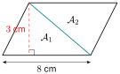
គេឱ្យ \(\displaystyle ABDF\) ជាប្រលេឡូក្រាមដែលមាន \(\displaystyle AB = 10\text{ cm}\), \(\displaystyle BD = 7\text{ cm}\) និង \(\displaystyle AC = 9\text{ cm}\) ដូចរូបខាងស្តាំ ។
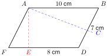
- ក. គណនាតម្លៃ \(\displaystyle AE\) ។
- ខ. រកផ្ទៃក្រឡាត្រីកោណ \(\displaystyle AFG\) បើគេដឹងថាផ្ទៃក្រឡា \(\displaystyle \Delta AGE\) ស្មើនឹង \(\displaystyle 3.15\text{ cm}^2\) ។
ក. គណនាតម្លៃ \(\displaystyle AE\) ៖
គេបាន \(\displaystyle FD \times AE = DB \times AC\) (ផ្ទៃក្រឡាប្រលេឡូក្រាម \(\displaystyle ABDF\))
\(\displaystyle 10 \times x = 7 \times 9\) នាំឱ្យ \(\displaystyle x = \frac{7 \times 9}{10} = 6.3\text{ cm}\) ។
ខ. រកផ្ទៃក្រឡាត្រីកោណ \(\displaystyle AFG\) ៖
បើគេដឹងថាផ្ទៃក្រឡាត្រីកោណ \(\displaystyle AGE\) ស្មើនឹង \(\displaystyle 3.15\text{ cm}^2\)
\(\displaystyle FE = FD - ED = 10 - 8 = 2\text{ cm}\)
ផ្ទៃក្រឡា \(\displaystyle \Delta AFG =\) ផ្ទៃក្រឡា \(\displaystyle \Delta AFE -\) ផ្ទៃក្រឡា \(\displaystyle \Delta AGE\)
\(\displaystyle \mathcal{A}_{\Delta AFG} = \frac{1}{2}FE \times AE - 3.15 = \frac{1}{2} \times 2 \times 6.3 - 3.15 = 3.15\text{ cm}^2\)
ដូច្នេះផ្ទៃក្រឡា \(\displaystyle \Delta AFG = 3.15\text{ cm}^2\) ។
គណនាផ្ទៃក្រឡាប្រផេះនៃរូបខាងស្តាំនេះ ។
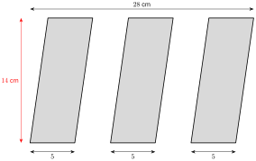
ផ្ទៃក្រឡាផ្នែកប្រផេះសរុប ៖
ដូច្នេះផ្ទៃក្រឡាផ្នែកប្រផេះស្មើ \(\displaystyle 210\text{ cm}^2\) ។
គេឱ្យ \(\displaystyle ABCD\) ជាប្រលេឡូក្រាមដែលមាន \(\displaystyle AB = 9\text{ cm}\), \(\displaystyle AD = 6\text{ cm}\) និង \(\displaystyle BK = 8\text{ cm}\) ។ គណនា
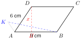
- ក. ផ្ទៃក្រឡាប្រលេឡូក្រាម \(\displaystyle ABCD\) ។
- ខ. តម្លៃនៃ \(\displaystyle x\) ។
មើលចម្លើយ
ក. \(\displaystyle 48\text{ cm}^2\) ខ. \(\displaystyle x = \frac{16}{3}\text{ cm}\) ។
2. ផ្ទៃក្រឡាចតុកោណស្មើ
ចតុកោណស្មើជាប្រលេឡូក្រាម ។ ដូច្នេះផ្ទៃក្រឡាចតុកោណស្មើកំណត់ដោយ \(\displaystyle \mathcal{A} = bh\) ។
ក្រៅពីគណនាផ្ទៃក្រឡាចតុកោណស្មើតាមប្រលេឡូក្រាម គេអាចគណនាផ្ទៃក្រឡារបស់វាដោយប្រើអង្កត់ទ្រូងបានដែរ ។
ទ្រឹស្តីបទ
ផ្ទៃក្រឡាចតុកោណស្មើដែលអង្កត់ទ្រូងមានរង្វាស់ \(\displaystyle d\) និង \(\displaystyle d'\) កំណត់ដោយ
\[\mathcal{A} = \frac{1}{2}d \times d' \text{ ។}\]
ឧទាហរណ៍ ៖ \(\displaystyle ABCD\) ជាចតុកោណស្មើដែលមានអង្កត់ទ្រូង \(\displaystyle AC = d\) និង \(\displaystyle BD = d'\) ។ បង្ហាញថា \(\displaystyle \mathcal{A} = \frac{1}{2}d \times d'\) ។
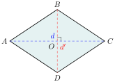
សម្រាយបញ្ជាក់
ផ្ទៃក្រឡាចតុកោណស្មើ \(\displaystyle ABCD =\) ផ្ទៃក្រឡាត្រីកោណ \(\displaystyle ABD +\) ផ្ទៃក្រឡាត្រីកោណ \(\displaystyle BDC\) ។
ដូច្នេះ \(\displaystyle \mathcal{A} = \frac{1}{2}d \times d'\) ។
ចតុកោណស្មើមួយមានអង្កត់ទ្រូងប្រវែង \(\displaystyle 13\text{ cm}\) និង \(\displaystyle 14\text{ cm}\) ។ គណនាផ្ទៃក្រឡានៃចតុកោណស្មើនោះ ។
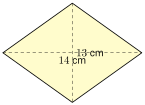
ផ្ទៃក្រឡានៃចតុកោណស្មើដែលមានអង្កត់ទ្រូងរង្វាស់ \(\displaystyle 13\text{ cm}\) និង \(\displaystyle 14\text{ cm}\) កំណត់ដោយ
ចតុកោណស្មើមួយមានផ្ទៃក្រឡា \(\displaystyle 1000\text{ mm}^2\) ។ បើអង្កត់ទ្រូងខ្លីមានរង្វាស់ \(\displaystyle 10\text{ mm}\) ។ គណនារង្វាស់អង្កត់ទ្រូងវែង ។
ដូច្នេះអង្កត់ទ្រូងវែងរង្វាស់ \(\displaystyle 200\text{ mm}\) ។
ចតុកោណស្មើមួយមានផ្ទៃក្រឡា \(\displaystyle 120\text{ cm}^2\) និងអង្កត់ទ្រូងវែងមានរង្វាស់ \(\displaystyle 30\text{ cm}\) ។ គណនារង្វាស់ជ្រុងនៃចតុកោណស្មើ ។
3. ផ្ទៃក្រឡាចតុកោណព្នាយ
យើងបានសិក្សារួចហើយថា ចតុកោណព្នាយជាចតុកោណដែលមានជ្រុងពីរស្របគ្នាហៅថាបាត ។ កម្ពស់នៃចតុកោណព្នាយជាចម្ងាយរវាងបាតទាំងពីរ ។
ឧទាហរណ៍៖ រាប់ឈ្មោះបាតនិងកម្ពស់នៃចតុកោណព្នាយខាងក្រោម៖
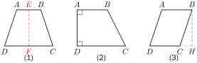
- \(\displaystyle AB\) និង \(\displaystyle DC\) ហៅថា បាត; \(\displaystyle EF\) ហៅថា កម្ពស់ ។
- \(\displaystyle AB\) និង \(\displaystyle DC\) ហៅថា បាត; \(\displaystyle AD\) ហៅថា កម្ពស់ ។
- \(\displaystyle AB\) និង \(\displaystyle DC\) ហៅថា បាត; \(\displaystyle CH\) ហៅថា កម្ពស់ ។
ទ្រឹស្តីបទ
ផ្ទៃក្រឡាចតុកោណព្នាយមានរង្វាស់បាត \(\displaystyle b\), \(\displaystyle b'\) និងកម្ពស់ \(\displaystyle h\) កំណត់ដោយ
\[\mathcal{A} = \frac{1}{2}(b + b') \times h\]
ឧទាហរណ៍ ៖ \(\displaystyle ABCD\) ជាចតុកោណព្នាយមានរង្វាស់បាត \(\displaystyle b\), \(\displaystyle b'\) និងកម្ពស់ \(\displaystyle h\) ។ បង្ហាញថា \(\displaystyle \mathcal{A} = \frac{1}{2}(b + b') \times h\) ។
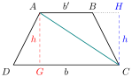
សម្រាយបញ្ជាក់
ភ្ជាប់អង្កត់ទ្រូង \(\displaystyle AC\) ចែកចតុកោណព្នាយជាត្រីកោណពីរគឺ \(\displaystyle \Delta ADC\) និង \(\displaystyle \Delta ABC\) ។
គូសកម្ពស់ \(\displaystyle AG\) និង \(\displaystyle CH\) នៃ \(\displaystyle \Delta ADC\) និង \(\displaystyle \Delta ABC\) ។
ផ្ទៃក្រឡាចតុកោណព្នាយ \(\displaystyle ABCD =\) ផ្ទៃក្រឡា \(\displaystyle \Delta ADC +\) ផ្ទៃក្រឡា \(\displaystyle \Delta ABC\)
ដូច្នេះ \(\displaystyle \mathcal{A} = \frac{1}{2}(b + b') \times h\) ។
ប្លង់ដីកសិដ្ឋានមួយមានរាងជាចតុកោណព្នាយ ត្រូវបានចែកជាពីរប្លង់ដីដូចរូបខាងក្រោម ។
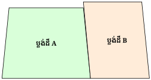
តើប្លង់ដីមួយណាមានទំហំធំជាង ? តើធំជាងប៉ុន្មានម៉ែត្រការេ ?
ដូច្នេះប្លង់ដី A ធំជាងប្លង់ដី B គឺ \(\displaystyle A - B = 16\,560 - 14\,690 = 1\,870\text{ m}^2\) ។
ច្រកចូលនៃអគារមួយមានរាងជាចតុកោណកែង ដោយបន្តុបចតុកោណព្នាយសមបាតពីលើដូចរូប ។ គណនាផ្ទៃក្រឡាច្រកចូលនៃអគារនោះ ។
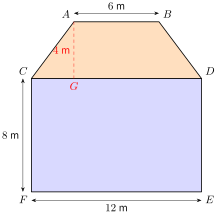
ផ្ទៃក្រឡាច្រកចូលនៃអគារ ៖
ដូច្នេះផ្ទៃក្រឡាច្រកចូលនៃអគារនោះគឺ \(\displaystyle 132\text{ m}^2\) ។
- ក. គណនាតម្លៃនៃ \(\displaystyle x\) ក្នុងរូបទី 1 ។
- ខ. គណនាផ្ទៃក្រឡានិងបរិមាត្រនៃរូបទី 2 ។
មើលចម្លើយ
ក. \(\displaystyle x = 14\) ខ. \(\displaystyle 1875\), \(\displaystyle 1934\) ។
លំហាត់
គណនា \(\displaystyle x\) និង \(\displaystyle y\) នៃរូបខាងក្រោម៖
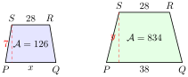
មើលដំណោះស្រាយ
ដំណោះស្រាយ
ចតុកោណព្នាយទី 1 ៖ បាតលើ \(\displaystyle b' = 28\text{ cm}\), បាតក្រោម \(\displaystyle b = x\text{ cm}\), កម្ពស់ \(\displaystyle h = 7\text{ cm}\), ផ្ទៃក្រឡា \(\displaystyle \mathcal{A} = 126\text{ cm}^2\) ។\[\begin{aligned} \mathcal{A} &= \frac{(b + b') \times h}{2} \\ 126 &= \frac{(x + 28) \times 7}{2} \\ (x + 28) \times 7 &= 252 \\ x + 28 &= \frac{252}{7} = 36 \implies x = 36 - 28 = 8\text{ cm} \end{aligned}\]ចតុកោណព្នាយទី 2 ៖ បាតលើ \(\displaystyle b' = 28\text{ cm}\), បាតក្រោម \(\displaystyle b = 38\text{ cm}\), កម្ពស់ \(\displaystyle h = y\text{ cm}\), ផ្ទៃក្រឡា \(\displaystyle \mathcal{A} = 834\text{ cm}^2\) ។
\[\begin{aligned} \mathcal{A} &= \frac{(b + b') \times h}{2} \\ 834 &= \frac{(38 + 28) \times y}{2} \\ 834 &= \frac{66 \times y}{2} = 33y \\ y &= \frac{834}{33} = \frac{278}{11} \approx 25.27\text{ cm} \end{aligned}\]ដូចនេះ \(\displaystyle x = 8\text{ cm}\) និង \(\displaystyle y \approx 25.27\text{ cm}\) ។
ជ្រុង \(\displaystyle AB\) និង \(\displaystyle DC\) នៃចតុកោណ \(\displaystyle ABCD\) កែងទៅនឹងអង្កត់ទ្រូង \(\displaystyle AC\) ។ គេឱ្យ \(\displaystyle AB = 2\text{ cm}\), \(\displaystyle DC = 8\text{ cm}\) និងផ្ទៃក្រឡាត្រីកោណ \(\displaystyle ABC\) ស្មើ \(\displaystyle 2\text{ cm}^2\) ។ គណនា
- ក. ប្រវែងជ្រុង \(\displaystyle AC\)
- ខ. ផ្ទៃក្រឡានៃចតុកោណ \(\displaystyle ABCD\) ។
មើលដំណោះស្រាយ
ដំណោះស្រាយ
- ក.
ប្រវែងជ្រុង \(\displaystyle AC\) ៖
ដោយ \(\displaystyle AB \perp AC\) នោះ \(\displaystyle \Delta ABC\) ជាត្រីកោណកែងត្រង់ \(\displaystyle A\) ។
ផ្ទៃក្រឡា \(\displaystyle \Delta ABC\) គឺ ៖\[\mathcal{A}_{\Delta ABC} = \frac{1}{2}AB \times AC\]\[2 = \frac{1}{2} \times 2 \times AC \implies AC = 2\text{ cm}\] - ខ.
ផ្ទៃក្រឡានៃចតុកោណ \(\displaystyle ABCD\) ៖
ដោយ \(\displaystyle DC \perp AC\) នោះ \(\displaystyle \Delta ADC\) ជាត្រីកោណកែងត្រង់ \(\displaystyle C\) មានបាត \(\displaystyle DC = 8\text{ cm}\) និងកម្ពស់ \(\displaystyle AC = 2\text{ cm}\) ៖\[\mathcal{A}_{\Delta ADC} = \frac{1}{2}DC \times AC = \frac{1}{2} \times 8 \times 2 = 8\text{ cm}^2\]ផ្ទៃក្រឡាចតុកោណ \(\displaystyle ABCD\) គឺ ៖
\[\mathcal{A}_{ABCD} = \mathcal{A}_{\Delta ABC} + \mathcal{A}_{\Delta ADC} = 2 + 8 = 10\text{ cm}^2\]
ក្នុងរូបខាងស្តាំ គេមាន \(\displaystyle AB = 17\text{ cm}\), \(\displaystyle BC = 25\text{ cm}\), \(\displaystyle AP = 8\text{ cm}\), \(\displaystyle BQ = 5\text{ cm}\), \(\displaystyle CR = 14\text{ cm}\) និង \(\displaystyle CS = 3\text{ cm}\) ។ គណនាផ្ទៃក្រឡាប្រផេះ ។
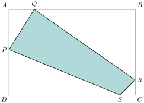
មើលដំណោះស្រាយ
ដំណោះស្រាយ
ផ្ទៃក្រឡាចតុកោណកែង \(\displaystyle ABCD\) ៖\[\mathcal{A}_{ABCD} = AB \times BC = 17 \times 25 = 425\text{ cm}^2\]គណនាប្រវែងជ្រុងដែលនៅសល់ ៖
- \(\displaystyle PB = AB - AP = 17 - 8 = 9\text{ cm}\)
- \(\displaystyle QC = BC - BQ = 25 - 5 = 20\text{ cm}\)
- \(\displaystyle RD = CD - CR = 17 - 14 = 3\text{ cm}\)
- \(\displaystyle SD = AD - AS = 25 - (25 - 3) = 3\text{ cm}\)
ផ្ទៃក្រឡាត្រីកោណកែងទាំង 4 នៅតាមជ្រុង ៖
\[\begin{aligned} \mathcal{A}_1 &= \frac{1}{2}AP \times AS = \frac{1}{2} \times 8 \times (25 - 3) = \frac{1}{2} \times 8 \times 22 = 88\text{ cm}^2 \\ \mathcal{A}_2 &= \frac{1}{2}PB \times BQ = \frac{1}{2} \times 9 \times 5 = 22.5\text{ cm}^2 \\ \mathcal{A}_3 &= \frac{1}{2}QC \times CR = \frac{1}{2} \times 20 \times 14 = 140\text{ cm}^2 \\ \mathcal{A}_4 &= \frac{1}{2}RD \times SD = \frac{1}{2} \times 3 \times 3 = 4.5\text{ cm}^2 \end{aligned}\]ផ្ទៃក្រឡាប្រផេះនៃចតុកោណ \(\displaystyle PQRS\) គឺ ៖
\[\mathcal{A}_{\text{ប្រផេះ}} = 425 - (88 + 22.5 + 140 + 4.5) = 425 - 255 = 170\text{ cm}^2\]គណនាផ្ទៃក្រឡាផ្នែកប្រផេះនៃរូបខាងក្រោម ៖
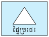
មើលដំណោះស្រាយ
ដំណោះស្រាយ
- 1. ចតុកោណព្នាយមានប្រហោងត្រីកោណ ៖
\(\displaystyle \mathcal{A}_{\text{ព្នាយ}} = \frac{(12 + 16) \times 10}{2} = 140\text{ cm}^2\)
\(\displaystyle \mathcal{A}_{\text{ត្រីកោណ}} = \frac{1}{2} \times 8 \times 10 = 40\text{ cm}^2\)
\(\displaystyle \mathcal{A}_{\text{ប្រផេះ}} = 140 - 40 = 100\text{ cm}^2\) ។ - 2. ត្រីកោណដកត្រីកោណខាងក្នុង ៖
\(\displaystyle \mathcal{A}_{\text{ធំ}} = \frac{1}{2} \times 19 \times 15 = 142.5\text{ cm}^2\)
\(\displaystyle \mathcal{A}_{\text{តូច}} = \frac{1}{2} \times 19 \times 7 = 66.5\text{ cm}^2\)
\(\displaystyle \mathcal{A}_{\text{ប្រផេះ}} = 142.5 - 66.5 = 76\text{ cm}^2\) ។ - 3. រាងអក្សរ L ដកត្រីកោណកែង ៖
\(\displaystyle \mathcal{A}_L = (24 \times 42) - (8 \times 8) = 1008 - 64 = 944\text{ cm}^2\)
\(\displaystyle \mathcal{A}_{\text{កាត់}} = \frac{1}{2} \times 14 \times 26 = 182\text{ cm}^2\)
\(\displaystyle \mathcal{A}_{\text{ប្រផេះ}} = 944 - 182 = 762\text{ cm}^2\) ។ - 4. ការ៉េកាត់ជ្រុងទាំងបួនចេញ (អដ្ឋកោណ) ៖
ជ្រុងការ៉េ \(\displaystyle s = 9\text{ cm} \implies \mathcal{A}_{\text{ការ៉េ}} = 9^2 = 81\text{ cm}^2\)
ត្រីកោណកែងទាំង 4 នៅជ្រុង ៖ \(\displaystyle 4 \times \left(\frac{1}{2} \times 3 \times 3\right) = 4 \times 4.5 = 18\text{ cm}^2\)
\(\displaystyle \mathcal{A}_{\text{ប្រផេះ}} = 81 - 18 = 63\text{ cm}^2\) ។
- 1. ចតុកោណព្នាយមានប្រហោងត្រីកោណ ៖
គណនាផ្ទៃក្រឡានិងបរិមាត្រនៃរូបខាងក្រោម៖
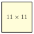
មើលដំណោះស្រាយ
ដំណោះស្រាយ
- 1. ចតុកោណស្មើ (អង្កត់ទ្រូងកាត់កែង) ៖
អង្កត់ទ្រូង \(\displaystyle d = 2 \times 4.5 = 9\), \(\displaystyle d' = 2 \times 6.7 = 13.4\)
\(\displaystyle \mathcal{A} = \frac{1}{2} \times 9 \times 13.4 = 60.3\) ; បរិមាត្រ \(\displaystyle P = 4 \times 8.07 \approx 32.3\) - 2. ចតុកោណស្មើ (ជ្រុង 32, អង្កត់ទ្រូង 50 និង 40) ៖
\(\displaystyle \mathcal{A} = \frac{1}{2} \times 50 \times 40 = 1000\) ; បរិមាត្រ \(\displaystyle P = 4 \times 32 = 128\) - 3. រូបរាងផ្ទះ (ចតុកោណកែង + ត្រីកោណដំបូល) ៖
\(\displaystyle \mathcal{A} = (10 \times 6) + \left(\frac{1}{2} \times 10 \times 4\right) = 60 + 20 = 80\) ; បរិមាត្រ \(\displaystyle P = 10 + 2(6) + 2(7) = 36\) - 4. ចតុកោណព្នាយកែង ៖
\(\displaystyle \mathcal{A} = \frac{(7.5 + 12) \times 3}{2} = 29.25\text{ cm}^2\) ; បរិមាត្រ \(\displaystyle P = 7.5 + 3 + 12 + 5 = 27.5\text{ cm}\) - 5. ត្រីកោណ (បាត 10, កម្ពស់ 6, ជ្រុង 7 និង 11) ៖
\(\displaystyle \mathcal{A} = \frac{1}{2} \times 10 \times 6 = 30\) ; បរិមាត្រ \(\displaystyle P = 10 + 7 + 11 = 28\) - 6. ចតុកោណព្នាយ (បាត 15 និង 30, កម្ពស់ 15) ៖
\(\displaystyle \mathcal{A} = \frac{(15 + 30) \times 15}{2} = 337.5\) ; បរិមាត្រ \(\displaystyle P = 15 + 30 + 16 + 18 = 79\) - 7. រាងអក្សរ L ៖
\(\displaystyle \mathcal{A} = (9 \times 15) + (12 \times 9) = 135 + 108 = 243\) ; បរិមាត្រ \(\displaystyle P = 21 + 15 + 9 + 6 + 12 + 9 = 72\) - 8. ប្រលេឡូក្រាម (បាត 20, កម្ពស់ 21, ជ្រុង 8) ៖
\(\displaystyle \mathcal{A} = 20 \times 21 = 420\) ; បរិមាត្រ \(\displaystyle P = 2(20 + 8) = 56\) - 9. ការ៉េ (ជ្រុង 11 cm) ៖
\(\displaystyle \mathcal{A} = 11^2 = 121\text{ cm}^2\) ; បរិមាត្រ \(\displaystyle P = 4 \times 11 = 44\text{ cm}\) ។
- 1. ចតុកោណស្មើ (អង្កត់ទ្រូងកាត់កែង) ៖
ចម្ការកៅស៊ូមួយរាងជាចតុកោណកែងមានបណ្តោយប្រវែង \(\displaystyle 5\text{ km}\) និងទទឹងប្រវែង \(\displaystyle 2.3\text{ km}\) ។ គណនាផ្ទៃក្រឡាចម្ការកៅស៊ូគិតជាហិកតា ។
មើលដំណោះស្រាយ
ដំណោះស្រាយ
ផ្ទៃក្រឡាចម្ការកៅស៊ូគិតជាគីឡូម៉ែត្រការេ ៖\[\mathcal{A} = 5\text{ km} \times 2.3\text{ km} = 11.5\text{ km}^2\]ដោយ \(\displaystyle 1\text{ km}^2 = 100\text{ ha}\) (ហិកតា) ៖
\[\mathcal{A} = 11.5 \times 100 = 1150\text{ ha}\]ដូចនេះផ្ទៃក្រឡាចម្ការកៅស៊ូស្មើ \(\displaystyle 1150\text{ ha}\) (ហិកតា) ។
សួនច្បារផ្កាកុលាបមួយរាងត្រីកោណមានបាត \(\displaystyle 5\text{ m}\) និងកម្ពស់ \(\displaystyle 3\text{ m}\) ។ បើគេដាំផ្កាកុលាបមួយដើមត្រូវការផ្ទៃ \(\displaystyle 0.5\text{ m}^2\) ។ តើគេអាចដាំផ្កាកុលាបបានប៉ុន្មានដើមក្នុងសួនច្បារនេះ ?
មើលដំណោះស្រាយ
ដំណោះស្រាយ
ផ្ទៃក្រឡាសួនច្បាររាងត្រីកោណ ៖\[\mathcal{A} = \frac{1}{2} \times 5\text{ m} \times 3\text{ m} = \frac{15}{2} = 7.5\text{ m}^2\]ចំនួនដើមផ្កាកុលាបដែលអាចដាំបាន ៖
\[N = \frac{7.5\text{ m}^2}{0.5\text{ m}^2} = 15\text{ ដើម}\]ដូចនេះគេអាចដាំផ្កាកុលាបបាន 15 ដើម ។
ជ្រុងម្ខាងនៃអគារមានរាងជាចតុកោណព្នាយ ។ បាតនៃអគារមានប្រវែង \(\displaystyle 400\text{ m}\) ហើយដំបូលនៃអគារមានប្រវែង \(\displaystyle 150\text{ m}\) ។ អគារមានកម្ពស់ប្រវែង \(\displaystyle 500\text{ m}\) ។ បើគេបំពេញជ្រុងនៃអគារនេះដោយផ្ទាំងកញ្ចក់ដែលមួយផ្ទាំងមានផ្ទៃ \(\displaystyle 1\text{ m}^2\) តើគេត្រូវប្រើកញ្ចក់អស់ប៉ុន្មានផ្ទាំង ?
មើលដំណោះស្រាយ
ដំណោះស្រាយ
ផ្ទៃក្រឡាជ្រុងអគាររាងជាចតុកោណព្នាយ ៖\[\mathcal{A} = \frac{(b + b') \times h}{2} = \frac{(400 + 150) \times 500}{2} = \frac{550 \times 500}{2} = 550 \times 250 = 137\,500\text{ m}^2\]ដោយផ្ទាំងកញ្ចក់មួយមានផ្ទៃ \(\displaystyle 1\text{ m}^2\) នោះចំនួនផ្ទាំងកញ្ចក់ដែលត្រូវប្រើគឺ ៖
\[N = \frac{137\,500\text{ m}^2}{1\text{ m}^2} = 137\,500\text{ ផ្ទាំង}\]ដូចនេះគេត្រូវប្រើកញ្ចក់អស់ \(\displaystyle 137\,500\) ផ្ទាំង ។
ខ្លឹមសារ៖ សៀវភៅពុម្ពគណិតវិទ្យាថ្នាក់ទី៨ របស់ក្រសួងអប់រំ យុវជន និងកីឡា · វាយអត្ថបទ គូររូបភាពឡើងវិញ និងរៀបចំលើអនឡាញដោយលោកគ្រូ សាន សុខលី សម្រាប់ការសិក្សាដោយឥតគិតថ្លៃ និងមិនរកប្រាក់ចំណេញ។ មិនមែនជាការបោះពុម្ពផ្លូវការរបស់ក្រសួងទេ។